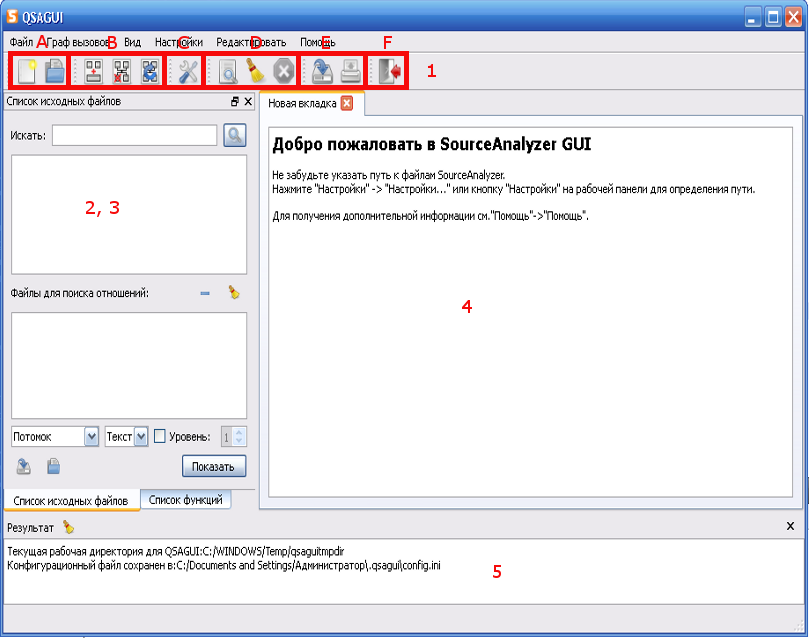

Содержание
Что такое QSAGUI?
Начало
Создание графа вызовов
Соединение графов вызовов
Очистка графа вызовов
Обновление графа вызовов
Получение списков файлов/функций
Показать граф вызовов
Настройки
|
Начало
Перед началом работы вы должны указать путь к файлам SourceAnalyzer: "Настройки" -> "Настройки..." или кнопка "Настройки" на панели инструментов.
Введите полный путь к файлам SourceAnalyzer или выберите "использовать системный путь", если SourceAnalyzer обнаружен.
Если вы хотите работать с SVG режимом, то укажите путь до Graphviz.
Для получения дополнительной информации см. Настройки.
Сообщения о результате выполнения команд вы сможете увидеть в нижней части окна ("Результат"). Чтобы получить информацию о QSAGUI используйте "Помощь" -> "О QSAGUI".
Далее описаны компоненты главного окна программы.

1. Панель инструментов:
A. "Новый" - окно "Новый граф вызовов", "Открыть" - диалог открытия графа вызовов.
B. "Соединение" - окно "Соединение графов вызовов", "Очистить" - окно "Очистить граф вызовов", "Обновить" - окно "Обновить граф вызовов".
C. Окно "Настройки".
D. "Найти" - диалог для поиска, "Очистить окно" - очистить все, "Уничтожить последний процесс" - уничтожает последний процесс.
E. "Сохранить файл" - диалог для сохранения содержимого центрального окна, "Печать" - диалог для распечатывания содержимого центрального окна.
F. "Выход" - выход из программы.
2. 3. Список функций и файлов.
4. Центральное окно.
5. Результат: показывает результат выполнения команд.
|